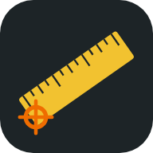

Meetmaat
Bouwtekening openen, ijken en maten aflezen voor in het werk
✓
Je hebt de app al
Open MeetmaatInstalleren met één tik
Daarna staat het icoon bij je apps.
✓
Geïnstalleerd
Je vindt Meetmaat nu bij je apps. Open hem voortaan via het icoon.
Installeren op Android
- Tik rechtsboven op de drie puntjes
- Kies App installeren of Toevoegen aan startscherm
- Tik op Installeren. Het icoon staat daarna bij je apps.
Zie je dat niet? Open deze link in Chrome: houd de link ingedrukt en kies "Openen in Chrome", of kopieer hem naar Chrome.
Installeren op iPhone
- Tik onderin op het deel-knopje
- Scroll omlaag en kies Zet op beginscherm
- Tik rechtsboven op Voeg toe. Het icoon staat daarna op je beginscherm.
Staat "Zet op beginscherm" er niet bij? Dan is de link geopend in WhatsApp of een andere app. Tik eerst op het Safari-kompasje of op "Open in Safari", en doe het daar opnieuw.
Je gebruikt niet Safari. Het werkt het betrouwbaarst in Safari: kopieer de link en plak hem daar.
Open dit op je telefoon
Scan de code met de camera van je telefoon. Dan krijg je daar de stappen.
Of gebruik Meetmaat hier op de computerGoed om te weten
- Open een PDF van de tekening. Meetmaat ijkt hem meestal zelf op de maatlijnen en herkent de palen.
- Een PDF uit WhatsApp of de mail kun je ook delen naar Meetmaat (alleen Android, na installeren).
- De laatste tekening, de ijking en je metingen blijven op je eigen telefoon.
- Werkt ook zonder internet, als je de app één keer met internet hebt geopend.
Ook van mij: Zaaihulp en Perceelkaart
Aparte apps met een eigen icoon. Installeer ze op dezelfde manier.
Zaaihulp installeren Perceelkaart installerenAndere telefoon? Toon alle stappen
Android (Chrome)
- Open de link in Chrome en tik rechtsboven op de drie puntjes ⋮
- Kies App installeren of Toevoegen aan startscherm
iPhone (Safari)
- Open de link in Safari en tik onderin op het deel-knopje
- Kies Zet op beginscherm en tik op Voeg toe